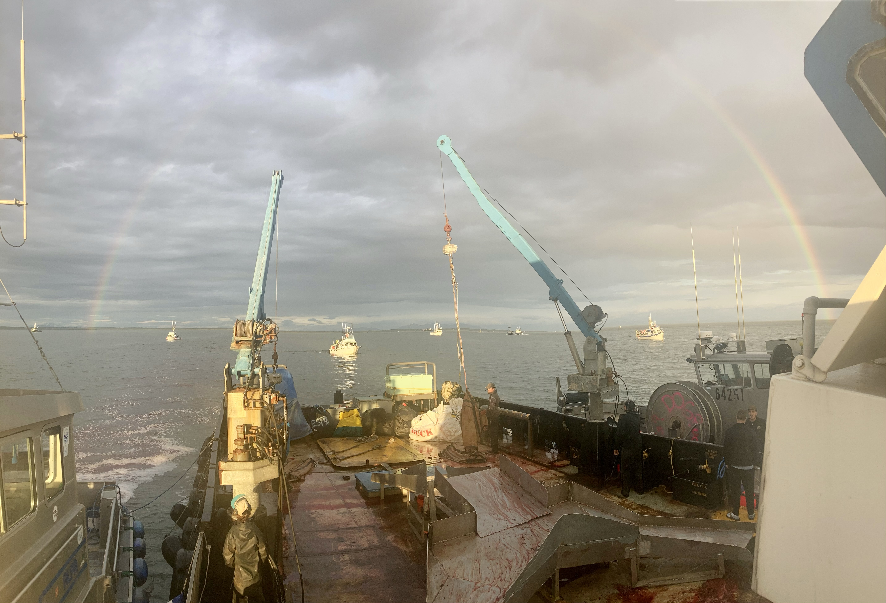

This summer I spent 7 weeks as part of the commercial salmon industry in Alaska. It was an amazing experience! I was on a tender boat, and our crew's job was to collect fish from small fishing boats and deliver those fish back to shore to be processed. My job was to write tickets for the fishing boats that recorded how many fish they delivered to us. This was a record year for number of fish in the rivers we worked in, and it was really cool to see how big fishing seasons go for this industry. There are many steps that go into getting salmon into the grocery store and eventually onto the dinner table and I feel so lucky that I was able to be a part of that sector of agricultlure!. 